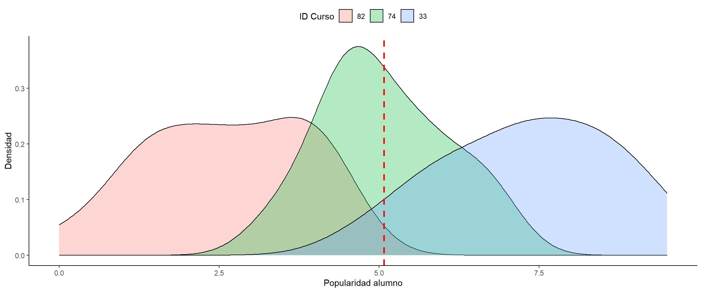
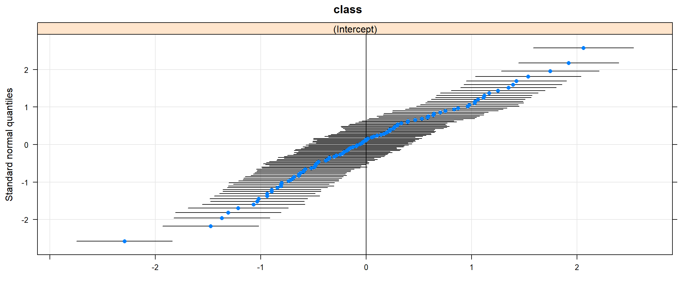

Multinivel I
jueves 03 septiembre
Libraries
install.packages("pacman") #**ESTO SE DEBE CORRER UNA SOLA VEZ** (!)
pacman::p_load(dplyr, summarytools, ggplot2,ggExtra,lme4,texreg)Descargar:
Contenidos ayudantía
- Modelo Nulo y Correlación Intraclase
- Varianza within/between
- Modelos con intercepto aleatorio
- Modelos con intercepto y pendiente aleatoria
- Interacciones:
- Nivel individual
- Nivel cruzado
Datos
Los datos de popularidad en popular son datos simulados para 2000 alumnos en 100 escuelas. El propósito es ofrecer un ejemplo muy simple para el análisis de regresión multinivel. La principal variable dependiente es la popularidad del alumno, medida a través un índice de popularidad en una escala del 1 al 10 a través de un procedimiento sociométrico.
Por lo general, un procedimiento sociométrico pide a todos los alumnos de una clase que califiquen a todos los demás alumnos y luego asigna a cada alumno el índice de popularidad promedio recibido.
Debido al procedimiento sociométrico, los efectos de grupo como son evidentes en los componentes de varianza de nivel superior son bastante fuertes.
Hay una segunda variable de resultado: la popularidad del alumno según la calificación de su maestro, en una escala del 1 al 10.
Las variables explicativas son el sexo del alumno (hombre = 0, mujer = 1), la extraversión del alumno (escala de 10 puntos) y la experiencia del profesor en años.
Cargar Datos
popdata <- read_spss("data/popular2.sav")popdata <- read_spss("https://jciturras.github.io/ayudantia-sol3051/data/popular2.sav")Seleccionar variables
popdata<- popdata %>% select(pupil,class,popular,sex,extrav,texp)Descriptivos
| No | Variable | Label | Stats / Values | Freqs (% of Valid) | Graph | Valid | Missing | ||||||||||||||||||||||||||||||||||||||||||||||||||||||||||||
|---|---|---|---|---|---|---|---|---|---|---|---|---|---|---|---|---|---|---|---|---|---|---|---|---|---|---|---|---|---|---|---|---|---|---|---|---|---|---|---|---|---|---|---|---|---|---|---|---|---|---|---|---|---|---|---|---|---|---|---|---|---|---|---|---|---|---|---|
| 1 | pupil [numeric] | pupil ident | Mean (sd) : 10.6 (6) min < med < max: 1 < 11 < 26 IQR (CV) : 10 (0.6) | 26 distinct values |  |
2000 (100%) | 0 (0%) | ||||||||||||||||||||||||||||||||||||||||||||||||||||||||||||
| 2 | class [numeric] | class ident | Mean (sd) : 50.4 (29.1) min < med < max: 1 < 51 < 100 IQR (CV) : 51 (0.6) | 100 distinct values |  |
2000 (100%) | 0 (0%) | ||||||||||||||||||||||||||||||||||||||||||||||||||||||||||||
| 3 | popular [numeric] | popularity sociometric score | Mean (sd) : 5.1 (1.4) min < med < max: 0 < 5.1 < 9.5 IQR (CV) : 1.9 (0.3) | 85 distinct values |  |
2000 (100%) | 0 (0%) | ||||||||||||||||||||||||||||||||||||||||||||||||||||||||||||
| 4 | sex [numeric] | pupil sex | Min : 0 Mean : 0.5 Max : 1 |
|
 |
2000 (100%) | 0 (0%) | ||||||||||||||||||||||||||||||||||||||||||||||||||||||||||||
| 5 | extrav [numeric] | extraversion | Mean (sd) : 5.2 (1.3) min < med < max: 1 < 5 < 10 IQR (CV) : 2 (0.2) |
|
 |
2000 (100%) | 0 (0%) | ||||||||||||||||||||||||||||||||||||||||||||||||||||||||||||
| 6 | texp [numeric] | teacher experience in years | Mean (sd) : 14.3 (6.6) min < med < max: 2 < 15 < 25 IQR (CV) : 12 (0.5) | 24 distinct values |  |
2000 (100%) | 0 (0%) |
Generated by summarytools 0.9.6 (R version 4.0.2)
2020-09-03
1 Práctica
1.1 Varianza within/between

Varianza within y between
En el caso A, vemos que al interior de los grupos la varianza es alta, pero la varianza entre grupos es baja.
En el caso B, vemos que al interior de los grupos la varianza es baja, pero la varianza entre grupos es alta.
Ahora, ejemplifiquemos con nuestros datos. Seleccionamos tres cursos para observar cómo se distribuye la popularidad de los alumnos al interior de cada uno y a la vez, es posible identificar la variacion entre cursos. En este caso La media de popularidad en la muestra es de 5.07645.
popdata %>%
filter(class %in% c(82,74,33)) %>%
group_by(class) %>%
summarise(mean_j=mean(popular),var_j=var(popular),sd_j=sd(popular)) %>% data.frame()## class mean_j var_j sd_j
## 1 33 7.326316 1.8042690 1.3432308
## 2 74 5.076471 0.9994118 0.9997058
## 3 82 2.595238 1.5774762 1.2559762popdata %>% filter(class %in% c(82,74,33)) %>%
ggplot() +
geom_density(aes(x = popular,fill=factor(class,levels = c(82,74,33))),alpha=0.3) +
geom_vline(xintercept = mean(popdata$popular),color="red",linetype="dashed", size=1) +
ylab("Densidad")+
xlab("Popularidad alumno") +
scale_fill_discrete("ID Curso")+
theme_classic()+
theme(legend.position = "top")
- Por un lado vemos que el curso 33 es la que posee un promedio más alto, siguiendo la curso 74 y luego 82 Por otro lado, vemos que el curso 2 es aquella que posee menor variación al interior, e contraste de la escuela 1 y 11.
Ahora, veamos la variación entre escuelas (between):
popdata <- popdata %>% mutate(mean_i=mean(popular)) # media muestral
popdata <- popdata %>% group_by(class) %>% mutate(mean_j=mean(popular)) # media para gruposp<- popdata %>%
ggplot() +
geom_point(aes(y = mean_j,x = class)) +
geom_hline(yintercept = 5.03,color="red") +
ylab("Media popularidad (Curso)")+
xlab("ID Curso")+
theme_classic() +
geom_text(data=subset(popdata, class %in%c(82,74,33)),
aes(y = mean_j,x = class,label=class),
nudge_x = -1,
nudge_y = -0.1,
color="blue")
ggMarginal(p, type="box",margins = 'y',fill = '#00A2FF81', size=20) En este gráfico se puede observar la variación de los promedios de popularidad por curso, donde la línea roja horizontal representa la media total de la muestra, es decir, la media para todos los alumnos de todos los cursos.
1.2 Modelo nulo
El “modelo nulo” refiere al modelo que no considera ningún predictor, pero sí considera la estructura anidada de los datos.
m00<-lmer(popular ~ (1|class), popdata)
summary(m00)## Linear mixed model fit by REML ['lmerMod']
## Formula: popular ~ (1 | class)
## Data: popdata
##
## REML criterion at convergence: 6330.5
##
## Scaled residuals:
## Min 1Q Median 3Q Max
## -3.5655 -0.6975 0.0020 0.6758 3.3175
##
## Random effects:
## Groups Name Variance Std.Dev.
## class (Intercept) 0.7021 0.8379
## Residual 1.2218 1.1053
## Number of obs: 2000, groups: class, 100
##
## Fixed effects:
## Estimate Std. Error t value
## (Intercept) 5.07786 0.08739 58.1En el output vemos dos parte centrales:
Random effects(parte ‘aleatoria’): Nos muestra la variabilidad correspondiente a nivel ‘intra’ o individual (within) y a nivel ‘entre’ grupal (between).Fixed effects(parte ‘fija’): Muestra los valores del intercepto y los coeficientes o pendientes (slopes) . Para referirse a estos términos se habla de ‘efectos fijos’ en referencia a los parámetros del modelo como en un modelo de regresión tradicional.
En base a esta información podemos calcular la correlación intra-clase (ICC por Intraclass correlation). Medida que representa la proporción de la varianza de popularidad que es explicada por la pertenencia a unidades de nivel 2, que en este caso son los cursos. Para ello, utilizamos la información contenida en Random effects.
sigma2_mu <- VarCorr(m00)$class[[1]]
sigma2_e <- sigma(m00)^2Tenemo que la correlación intraclase se calcula con:
\(\rho = \frac{\sigma_{\mu_0}^2}{\sigma_{\mu_0}^2+\sigma_{\epsilon}^2} = \frac{0.702}{0.702+1.221}=\)
sigma2_mu / (sigma2_mu+sigma2_e)## [1] 0.3649386\(\rho\) = 0.365
Interpretación
La correlación intraclase nos indica que una proporción del 0.365 de la variable popularidad que es atribuible a la pertenencia a unidades de nivel 2. En este caso, sería la proporción atribuible a la varianza entre-escuelas (between)
Visualización de efectos aleatorios
library(lattice)
qqmath(ranef(m00, condVar = TRUE))## $class
1.3 Modelo con intercepto aleatorio
A diferencia del modelo nulo, el modelo con intercepto aleatorio considera predictores en la estimación. Para este caso, utilizamos sexo (mujer=1), extraversión del alumno y la experiencia del profesor.
m01.ri<- lmer(popular ~ sex + extrav + texp + (1 |class), popdata)
screenreg(list(m00,m01.ri), custom.model.names = c("Modelo Nulo", "Modelo 1"))##
## ==================================================
## Modelo Nulo Modelo 1
## --------------------------------------------------
## (Intercept) 5.08 *** 0.81 ***
## (0.09) (0.17)
## sex 1.25 ***
## (0.04)
## extrav 0.45 ***
## (0.02)
## texp 0.09 ***
## (0.01)
## --------------------------------------------------
## AIC 6336.51 4897.02
## BIC 6353.31 4930.63
## Log Likelihood -3165.25 -2442.51
## Num. obs. 2000 2000
## Num. groups: class 100 100
## Var: class (Intercept) 0.70 0.30
## Var: Residual 1.22 0.59
## ==================================================
## *** p < 0.001; ** p < 0.01; * p < 0.05Interpretación
En el caso del Modelo Nulo
El intercepto para un modelo sin predictores representa el promedio de popularidad entre todos los cursos y estudiantes, que en este caso es 5.08.
La varianza de los residuos a nivel de alumno es representada se puede ver en Var: Residual con un valor de 1.22, mientras que la varianza del residuo a nivel del curso se puede observar en Var: class (Intercept) con un valor de 0.7.
En el Modelo 1 es el modelo con intercepto aleatorio y pendendientes fijas. Es decir, sólo el intercepto varía entre cursos, mientras que los efectos de sexo y extraversión se consideran fijos (no varían según curso).
1.4 Modelo con intercepto y pendiente aleatoria
m01.rirs<- lmer(popular ~ sex + extrav + texp + (1+ sex + extrav |class), popdata)
screenreg(list(m01.ri,m01.rirs),custom.model.names = c("Modelo 1", "Modelo 2"))##
## =========================================================
## Modelo 1 Modelo 2
## ---------------------------------------------------------
## (Intercept) 0.81 *** 0.76 ***
## (0.17) (0.20)
## sex 1.25 *** 1.25 ***
## (0.04) (0.04)
## extrav 0.45 *** 0.45 ***
## (0.02) (0.02)
## texp 0.09 *** 0.09 ***
## (0.01) (0.01)
## ---------------------------------------------------------
## AIC 4897.02 4855.26
## BIC 4930.63 4916.87
## Log Likelihood -2442.51 -2416.63
## Num. obs. 2000 2000
## Num. groups: class 100 100
## Var: class (Intercept) 0.30 1.34
## Var: Residual 0.59 0.55
## Var: class sex 0.00
## Var: class extrav 0.03
## Cov: class (Intercept) sex -0.02
## Cov: class (Intercept) extrav -0.19
## Cov: class sex extrav -0.00
## =========================================================
## *** p < 0.001; ** p < 0.01; * p < 0.05Interpretación
A diferencia del Modelo 1 (Intercepto aleatorio, pendiente fija) el Modelo 2 considera que tanto el sexo como la extraversión de los alumnos tienen una pendiente aleatoria, esto significa que ahora sí se considera que el efecto de ambas variables es distinto según curso. A continuación se puede visualizar el Intercepto para cada curso, como también la pendiente de sexo y extraversión.
Vemos que los coeficientes de todas las variables son estadísticamente significativos al 99.9% de confianza.
El coeficiente para el género del alumno es 1.24. Dado que el valor 1= mujer y 0= hombre, esto significa que el promedio, las mujeres tienen 1.25 puntos más que los hombres en la escala de popularidad.
El coeficiente de la extraversión es 0.45, lo cual significa que por cada incremento de una unidad en la escala de estraversión, se espera que la popularidad incremente en 0.45.
El coeficiente para la experiencia del profesor es de 0.09, lo cual indica que por cada año de experiencia del profesor, la popularidad promedio del curso se incrementa en 0.09 puntos en la escala de popularidad.
Para visualizarlo, usamos la función lattice::qqmath() sobre lmer::ranef(), esta última función nos entrega los valores de intercepto y pendiente aleatoria para cada curso.
qqmath(ranef(m01.rirs))## $class1.5 Interacciones
- Nivel individual: extraversión \(\times\) sexo
Este modelo evalúa si el efecto de extraversión está moderado por el sexo del alumno. Para ello, se debe tomar en cuenta que efecto de extraversión varía en magnitud según el curso.
m02.rirs<- lmer(popular ~ extrav*sex + texp + (1+ sex + extrav |class), popdata)- Nivel cruzado: extraversión \(\times\) experiencia profesor
En este ejemplo veremos si la experiencia del profesor modera el efecto de extraversión sobre popularidad.
m03.rirs<- lmer(popular ~ sex + extrav*texp + (1+ sex + extrav |class), popdata)screenreg(list(m01.rirs,m02.rirs,m03.rirs))##
## =======================================================================
## Model 1 Model 2 Model 3
## -----------------------------------------------------------------------
## (Intercept) 0.76 *** 0.91 *** -1.21 ***
## (0.20) (0.21) (0.27)
## sex 1.25 *** 0.97 *** 1.24 ***
## (0.04) (0.16) (0.04)
## extrav 0.45 *** 0.42 *** 0.80 ***
## (0.02) (0.03) (0.04)
## texp 0.09 *** 0.09 *** 0.23 ***
## (0.01) (0.01) (0.02)
## extrav:sex 0.05
## (0.03)
## extrav:texp -0.02 ***
## (0.00)
## -----------------------------------------------------------------------
## AIC 4855.26 4859.45 4802.34
## BIC 4916.87 4926.66 4869.55
## Log Likelihood -2416.63 -2417.72 -2389.17
## Num. obs. 2000 2000 2000
## Num. groups: class 100 100 100
## Var: class (Intercept) 1.34 1.40 0.49
## Var: class sex 0.00 0.00 0.00
## Var: class extrav 0.03 0.04 0.01
## Cov: class (Intercept) sex -0.02 -0.01 -0.02
## Cov: class (Intercept) extrav -0.19 -0.20 -0.03
## Cov: class sex extrav -0.00 -0.00 -0.00
## Var: Residual 0.55 0.55 0.55
## =======================================================================
## *** p < 0.001; ** p < 0.01; * p < 0.05Interpretación
- El coeficiente de extraversión (
extrav) es de 0.42 y el coeficiente multiplicativo de extrav:sex es de 0.05. Sin embargo, el coeficiente multiplicativo no es estadísticamente signficativo.
Lo que nos indica es que el efecto de extraversión varía positivamente según el sexo del alumno. En este caso, dado que sexo=1 corresponde a las mujeres, vemos que en la medida que aumenta la extraversión del alumno, las mujeres sostenidamente tendrán un efecto mayor al de los hombres. Manteniendo todas las demás variables constantes.
- El coeficiente de extraversión (
extrav) es de 0.80 y el coeficiente multiplicativo de extrav:texp es de -0.02, los cual es pequeño pero estadísticamente significativo al 99.9% de confianza.
El valor negativo del del coeficiente multiplicativo de nivel cruzado nos indica que cuando los profesores son experimentados, las ventajas de ser extrovertido son menores de lo que indica el efecto principal de extraversión (0.80). Entonces, la diferencia en popularidad entre alumnos extrovertidos e introvertidos se vuelve menor con profesores más experimentados.
Sitio por Julio Iturra Sanhueza
julioiturrasanhueza@gmail.com